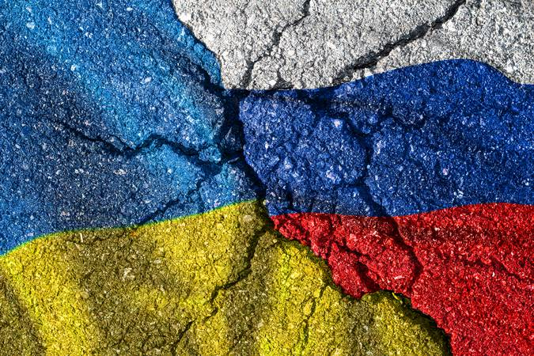
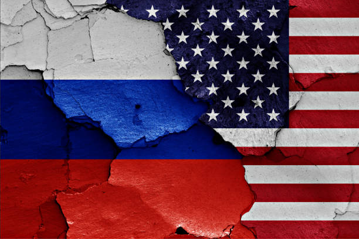

Guerra Entre Rússia e Ucrânia
A Invasão da Ucrânia pela Rússia em 2022, ou oficialmente pelo governo russo como a "Operação Militar Especial na Ucrânia", é uma invasão militar em larga escala lançada pela Rússia contra a Ucrânia, um de seus países vizinhos, a sudoeste, marcando uma escalada acentuada para um conflito que começou em 2014. Vários analistas chamaram a invasão de o maior confronto militar na Europa desde a Segunda Guerra Mundial. A guerra gerou uma enorme onda migratória da Ucrânia e da Rússia, além de uma crise alimentar global, aumento no preço dos combustíveis e inflação.
Após a Revolução da Dignidade na Ucrânia em 2014, a Rússia anexou a Crimeia, enquanto as forças separatistas apoiadas pelo governo russo tomaram parte da região do Donbas no sudeste da Ucrânia.Desde o início de 2021, um acúmulo de presença militar russa ocorreu ao longo da fronteira Rússia-Ucrânia. Os Estados Unidos e outros países acusaram a Rússia de planejar uma invasão da Ucrânia, embora as autoridades russas repetidamente negassem que tinham essa intenção.Durante a crise, o presidente russo Vladimir Putin descreveu a ampliação da OTAN pós-1997 como uma "ameaça à segurança" de seu país, uma afirmação que a OTAN rejeita, e exigiu que a Ucrânia fosse permanentemente impedida de ingressar na OTAN.
Putin também expressou opiniões irredentistas russas e questionou o direito de existir da Ucrânia. Antes da invasão, tentando fornecer casus belli, Putin acusou a Ucrânia de cometer "genocídio" contra seus cidadãos que falam russo, o que foi amplamente descrito como falso e infundado.
Em 21 de fevereiro de 2022, Putin reconheceu a República Popular de Donetsk e a República Popular de Lugansk, duas regiões autoproclamadas como Estados, controladas por separatistas pró-Rússia em Donbas.[87] No dia seguinte, o Conselho da Federação da Rússia autorizou por unanimidade o uso da força militar e as tropas russas entraram em ambos os territórios.Em 24 de fevereiro, Putin anunciou uma "operação militar especial", supostamente para "desmilitarizar" e "desnazificar" a Ucrânia.Minutos depois, mísseis atingiram locais em todo o território ucraniano, incluindo Kiev, a capital. A Guarda Fronteira Ucraniana relatou ataques a postos fronteiriços com a Rússia e a Bielorrússia.Pouco depois, as forças terrestres russas adentraram na Ucrânia.O presidente ucraniano Volodymyr Zelensky promulgou a lei marcial e clamou por uma mobilização geral no país...
Este artigo ou se(c)ção trata de um conflito armado recente ou em curso. A informação apresentada pode mudar com frequência. Não adicione especulações, nem texto sem referência a fontes confiáveis.
Editado pela última vez em 2 de novembro de 2024; data da marcação: 25 de outubro de 2024.
Leia mais

Conflito entre Palestina e Israel
"Os conflitos entre Israel e Palestina remontam à primeira metade do século XX e foram iniciados pela disputa em torno do território palestino. Essa rivalidade se iniciou com o crescimento da população judia na Palestina e resultou em uma série de conflitos a partir de 1948. Israel afirma que suas ações são em defesa de sua própria população, e os palestinos acusam Israel de sustentar um regime de perseguição."
Causas do Conflito entre Israel e Palestina
"O confronto travado entre Israel e Palestina é um dos conflitos de mais longa duração da história da humanidade. Estende-se oficialmente desde a década de 1940, embora a década de 1930 tenha presenciado uma crescente tensão e violência entre judeus e árabes. Passado todo esse período, de tempos em tempos, hostilidades acontecem entre os dois lados, aumentando a tensão.
Historicamente falando, o conflito entre israelenses e palestinos se explica pelo controle da Palestina. Embora exista a questão da religião, que importa muito mais quando o assunto é Jerusalém, a rivalidade entre israelenses e palestinos tem motivos políticos, principalmente, e que envolvem o controle daquele território.
Mais recentemente falando, muitos analistas apontam que o confronto atualmente envolve novos aspectos, os quais estão em torno da maneira violenta pela qual Israel trata a população palestina que reside seja em Israel, seja nos territórios palestinos da Cisjordânia e da Faixa de Gaza.
Assim, a população palestina luta para conseguir a sua autodeterminação — uma vez que o Estado da Palestina não existe, oficialmente falando —, mas também para conquistar melhores condições de vida, pois alegam que Israel os mantém em condições degradantes, limitando o acesso da população a recursos básicos, como água, e sufocando a população de Gaza com um bloqueio econômico que se estende desde 2007, entre outros fatores.
Israel, por sua vez, defende suas ações afirmando que elas se justificam no contexto de combate ao Hamas, organização considerada terrorista pelos israelenses e que comanda a Faixa de Gaza desde 2006. Sendo assim, Israel afirma que seus ataques e todas as outras ações que são tomadas visam exclusivamente a prejudicar o Hamas. Israel ainda acusa o Hamas de usar a população civil da Palestina como escudo humano."
Escrito por: Daniel Neves Silva
Formado em História pela Universidade Estadual de Goiás (UEG) e especialista em História e Narrativas Audiovisuais pela Universidade Federal de Goiás (UFG). Atua como professor de História desde 2010. - https://brasilescola.uol.com.br/
Leia mais

Tensões entre EUA e Rússia
Em entrevista à CNN nesta quarta-feira (22), o professor e PhD em Relações Internacionais, Carlos Gustavo Poggio, falou sobre os momentos protagonizados pelos Estados Unidos e pela Rússia nos últimos tempos e declarou ser a maior tensão já vista desde a Guerra Fria.
“Estamos vivendo o momento de maior tensão entre as duas grandes potencias desde meados da Guerra Fria, tensões crescentes”, declarou.
Poggio também pontuou que a guerra da Ucrânia “não parecer haver qualquer possibilidade de negociação a curto prazo” e comparou com outros conflitos, como a guerra entre os Estados Unidos e o Iraque.
“O tempo da guerra vai depender muito da correlação de forças. Esse é o caso clássico de uma grande potência invadindo um país menor e essas guerras costumam ser relativamente longas”.
Na terça-feira (21), o presidente russo, Vladimir Putin, declarou a suspensão da participação da Rússia no novo tratado START com os Estados Unidos, que limita os arsenais nucleares estratégicos dos dois lados.
Para Poggio, atitude de Putin foi simbólica e uma forma de pressionar o Ocidente a deixar de apoiar a Ucrânia na guerra.
“Putin anunciar a saída do tratado é simbólico porque ele já não estava respeitando algumas cláusulas, como a inspeção dos arsenais russos. É uma iniciativa simbólica e também para pressionar o ocidente a não apoiar mais a Ucrânia na guerra”, afirmou.
De acordo com Carlos Gustavo Poggio, conflitos entre Estados Unidos e Rússia estão crescendo cada vez mais
Isabela Filardi e Letícia Britoda CNN , Em São Paulo
Leia mais